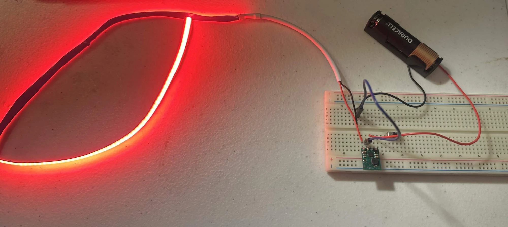
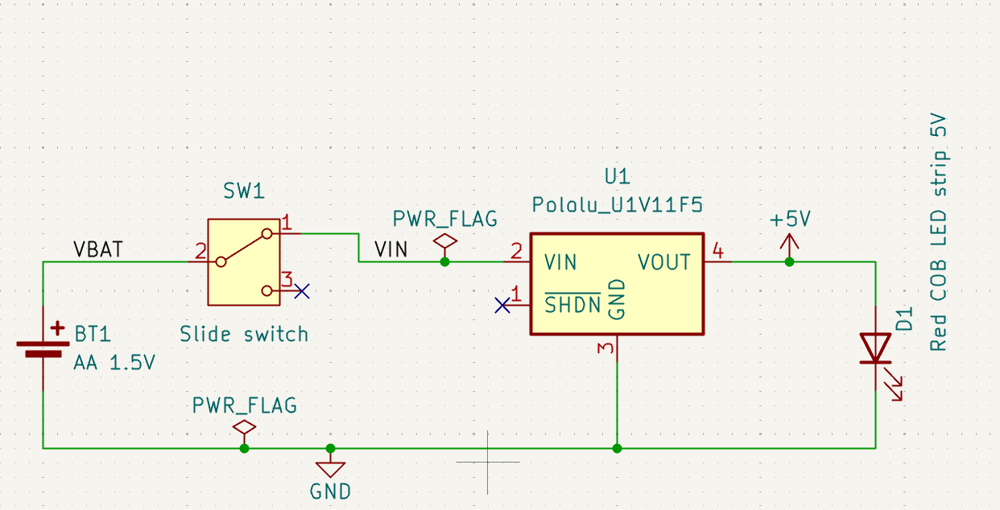

A hardware prototype of a marshalling wand small enough to carry like a pen.
At my Fedex airport hub, the ramp crews marshall wand batons for guiding aircraft and also all vehicles and contains near aircraft, due to operations at night. Many times, the wands are left on equipment or in vehicles, causing someone to go find them, then come back to guide the vehicle. Therefore, the idea came to me to create pen sized versions of marshalling wands for people to carry in their vests, so they can always be ready to guide vehicles. These are not intended to marshall aircraft, as the distance and size of the wand are not sufficient for that, but this is practical enough for guiding vehicles to the aircraft.
The first mock-up runs off a single AA battery. A Pololu 5V Step-Up Voltage Regulator (U1V11F5) boosts the battery's roughly 1.5V up to 5V, which powers a red 5V COB LED strip. A slide switch turns it on and off. The final design will use a AAA battery instead, but I accidentally ordered an AA battery holder for this prototype. It will not make a difference because they run at approximately the same voltage.

Once the breadboard circuit was working, I designed a KiCad schematic of the circuit, so I could potentially design a PCB for the future, and to also make sure I had the correct connections, and also document properly the design.
